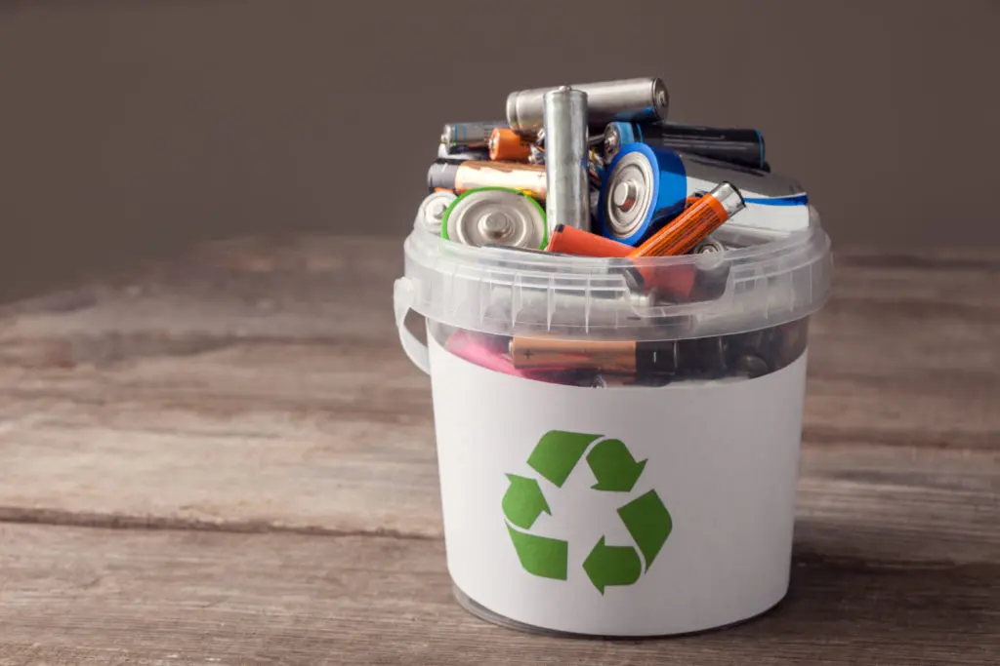

Recycling batteries is becoming increasingly important as the world strives to produce more products, but also create a more sustainable practice moving forward. From phones to electric cars, the world is running on batteries! However, unrecycled batteries sent to a landfill can cause toxic materials to leach into water sources and cause pollution. They could even release toxic fumes if they are accidentally incinerated. Recycling batteries is a simple way to help protect our environment and conserve natural resources. YOU can make a direct impact on your community just simply by recycling!!!
